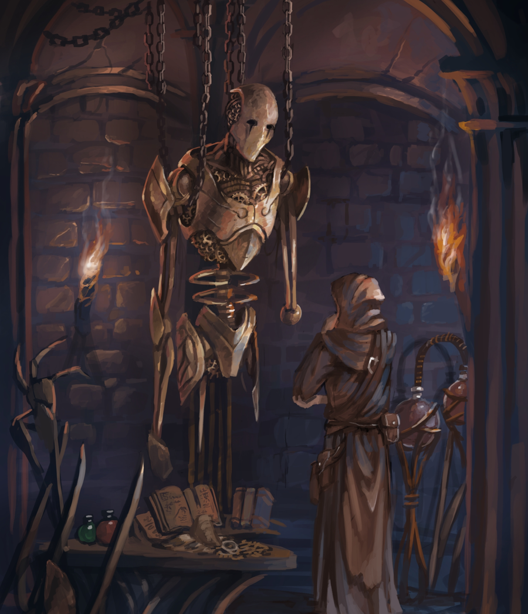

MASTERY
Avorkarth is a more settled world, where the mighty and magical are rare and the skilled are just that, skilled, nothing more. Mastery represents the character's ability in certain skills compared to the rest of its own species through determination and practice.
Although mastery may not give a weak character the ability to level mountains, a character with mastered skill has a much higher chance of success in their field of expertise.
MASTERY CATEOGRIES
Natural Skills : Natural skills are the everyday abilities of creatures and as such don't require any knowledge to use. However, they are the hardest to master as they require a creature to surpass their natural ability.
Trained Skills : Trained Skills, which include Learned, Knowledge, Weapon and Trade mastery, while having a harsher penalty to begin with, have a greater potential of benefit given time and effort on the part of the character.

“True dedication to one's craft leads to creations beyond the imagined.” - Enchanter Luzark
Weapon Mastery : While each weapon has its own mastery, proficiency in similar weaponry is given at the same skill bonus but -1. (So a short sword and a long sword would be different masteries, but share the weapon type of "One-Handed Sword".) Likewise, this mastery extends to all weaponry but at a -3. (Such as a sword compared to a spear or a bow.)
Trade Mastery : Trade Skills, much like Weapon mastery, is on a per trade basis, but certain trades overlap or give bonuses elsewhere, such as a dancer having a natural sense of balance and grace. These are shown in the skill section.
MASTERY PER YEARS
Tutelage : Trained Skill Mastery ranks often have sub-ranks which require the character to do that rank twice before moving to the next.
COMMON MASTERY
| RANK | MASTERY | YEARS PER RANK | SKILL BONUS |
|---|---|---|---|
| Untrained | Natural | 0 | +0 |
| Trained | 0 | - 2 | |
| Apprentice | Natural | 2 | +1 |
| Trained | 1 | - 1 / +0 | |
| Artisan | Natural | 5 | +2 |
| Trained | 3 | +1 / +2 | |
GREAT MASTERY
- Roll two dice when rolling a skill check and take the greater result.| RANK | MASTERY | YEARS PER RANK | SKILL BONUS |
|---|---|---|---|
| Expert | Natural | 10 | +3 |
| Trained | 5 | +3 / +4 | |
| Master | Natural | 50 | +4 |
| Trained | 10 | +5 / +6 | |
| Grand Master | Natural | 100 | +5 |
| Trained | 25 | +7 / +8 | |
EXCEPTIONAL MASTERY
- In addition to the Great Mastery bonus, you may reroll a single die.| RANK | MASTERY | YEARS PER RANK | SKILL BONUS |
|---|---|---|---|
| Illustrious Master | Natural | 500 | +6 |
| Trained | 100 | +9 / +10 | |
| Fabled Master | Natural | 1,000 | +7 |
| Trained | 250 | +11 / +12 | |
| Mythical Master | Natural | 10,000 | +8 |
| Trained | 500 | +13 / +14 | |
CLASS TALENTS
CLASSES | TALENTS
Unlike many table-top games, a player is not locked in a class of a specific choice in the realm of Avorkarth. Instead, the player may pick and choose from the list of talents available to their race to create their own class, matching as closely as possible to their backstory. Want a thief who is good at sword fighting? No problem, that can be done. What about a shamanistic barbarian? Take talents from the Fighter, Adept and Bard classes, and you've a fearsome warrior caster. Keep in mind however that Avorkarth is a low powered world where the mystical and wondrous are exactly that. Even a single talent from any category puts a character way ahead of the average of their kind. While a player could technically mix and match 30+ class talents to create a really powerful character, to be as such would require quite the fairy tale of a backstory.
CLASS CATEGORIES/RANKS
While many of the classes can be used by any character, there are more specialized classes that are evolutions or progressions of earlier classes. An example of this would be the Karthian knight or assassin. These are classes that become available once a certain number of talents were chosen prior and need certain requirements met. Classes range from Rank 1 to Rank 6 in terms of power and complexity.
CLASS REQUIREMENTS
Sometimes a class will have one or more requirements to be met before any of the talents can be taken. Most often, this would be a certain level of mastery in one of its subjects, or a certain amount of talents from other classes. For example, a character needs 2 rogue talents and 2 fighter talents before they can take any assassin talents.
CLASS BONUS
Whenever a character chooses a class (even before choosing any of the feats), the character may automatically gains a bonus for reaching the level of expertise needed. This class bonus is always part of the character and must be applied. Not all classes have this, but it'll be at the top of the feat listings.
RACIAL/SPECIES CLASSES
Some classes or variant feats are locked to a certain species or race within that species. This is due to certain gods granting powers or ways of the past anchoring their methods or physiological specialties. This makes it so that each area has their own specialities, such as the karthian's priests of Eonna compared to the sharassian's priests of Orsir.
CLASS RARITY
Adventurers and like specialist are rare in the lands of avorkarth. Even the most common of classes, such as the warrior or scholar are paths taken by very few . The class rarities are as follows.
- Adventurer Class - 1 per 2,500
- Specialized Class - 1 per 25,000
- Mighty Class - 1 per 250,000
- Fabled Class - 1 per 2,500,000
- Legendary Class - 1 per 25,000,000
- Mythical Class - Only a few per Age

“Keep your blades sheathed friends, the faint light in this swamp is enough to glint off of the steel, and the eyes of swamp trolls are very keen.” - Pendar, Paladin of Arenya
CLASSES
CLASSES PER RARITY
As stated above, those who focus their years dedicated to a way of life and with a natural ability can develop a talent within. This focus is often shown by a path tread throughout the character's life, known as a class. While characters are not limited to a single class, most living in Avorkarth do not even have a single talent.
ADVENTURER CLASSES
(1 individual per population of 2,500)
Those with enough time and effort given to a single path are known as adventurers. These individuals rise above the common clout and are often requested for dangerous missions or delicate situations. Many adventurers become well known in their locale for their prowess.
| Adventurer Classes | |
|---|---|
| Warrior | Rogue |
| Scholar | Performer |
| Cleric | Tracker |
| Trade-master | |
WARRIOR | |||
|---|---|---|---|
| Warriors, ever improving their martial abilities, focus their talents towards victory in battle. | |||
| - | |||
Requirements | |||
| Species | |||
| Any | |||
| Skill Mastery | Mastery Rank | Class | Talents |
| Weapon (Any) | Artisan | - | - |
| FEAT - Healthy Body |
|---|
| Gain +1 Wound. |
| FEAT - Ardent Training |
|---|
| Add +1 to hit on rolls with a chosen weapon which has a mastery score of Artisan or higher. This feat may be taken multiple times for different weapons but the bonus cannot stack. |
| FEAT - Strengthened Strikes |
|---|
| Deal additional damage equal to two damage categories lower whenever you hit. If two categories lower brings the damage to 0, then this feat doesn't apply. |
| FEAT - Practiced Footwork |
|---|
| Add +1 to your dodge when disengaging from an enemy. |
| FEAT - Physical Training |
|---|
| Gain +1 to one of the following skills : Balance, Climb, Jump, Tumble or Swim. This feat may be taken multiple times for different skills but the bonus cannot stack. |
| FEAT - Fighter's Instinct |
|---|
| Add +1 to your initiative and parry. |
ROGUE | |||
|---|---|---|---|
| Rogues excel at thievery, be it from deft hands to silent footfalls. | |||
| - | |||
Requirements | |||
| Species | |||
| Any | |||
| Skill Mastery | Mastery Rank | Class | Talents |
| Move Silently | Apprentice | - | - |
| Pick Lock | Apprentice | - | - |
| Pick Pocket | Apprentice | - | - |
| CLASS BONUS - Stealth |
|---|
| You may roll the move silently and hide checks at the same time and take the higher result for both. |
| FEAT - Identify Target |
|---|
| You may identify a target over 10 full-round actions. You get +1 to move silently, hide, listen and spot checks against that target as long as you are not distracted. You may only have one target at a time. |
| FEAT - Silent Running |
|---|
| You may move half your movement instead of a single tile while moving silently. |
| FEAT - Pick Mastery |
|---|
| Gain +1 to your pick lock skill checks. |
| FEAT - Practiced Hand |
|---|
| Gain +1 to your pickpocket skill checks. |
| FEAT - Trap Sense |
|---|
| Whenever you roll spot and search skill checks to find traps, critical fails are only counted as fails. |
CLASSES
SCHOLAR | |||
|---|---|---|---|
| Scholars are masters of knowledge, for it is that which they crave and seek. | |||
| - | |||
Requirements | |||
| Species | |||
| Any | |||
| Skill Mastery | Mastery Rank | Class | Talents |
| Knowledge x 3 (Any) | Apprentice | - | - |
| FEAT - Area of Expertise |
|---|
| Add 1 die to the number of dice rolled for any mastered knowledge skill. Choose the highest result. |
| FEAT - Learned Mind |
|---|
| Add +1 to any Intelligence skill check or roll that isn't a knowledge skill check. |
| FEAT - Ancient Languages |
|---|
| Double your language points. These additional points can only be used to incease any Odd language to "Read/Write Simple", any Rare languages to "Speak" and any Fabled languages to "Understand". |
| FEAT - Voracious Reader |
|---|
| You can "Understand" one language of similar base for each language you have at a "Read/Write Complex" level. *For example, knowing Karthian would allow you to understand one of the other human languages : Delnen, Dwalai, Tildar, Skord or Xing.* |
| FEAT - Local Knowledge |
|---|
| Increase your mastery by 1 for all knowledge skill checks of a specific town/area/city. |
| FEAT - Historian |
|---|
| Add +1 to any knowledge (history) skill checks for a chosen species' history, culture or deities. |
PERFORMER | |||
|---|---|---|---|
| Performers are the life of every event, capable of drawing the eyes and ears of any onlooker. | |||
| - | |||
Requirements | |||
| Species | |||
| Any | |||
| Skill Mastery | Mastery Rank | Class | Talents |
| Perform (*See Class Bonus) | Artisan | - | - |
| CLASS BONUS - Mastery of the Stage |
|---|
| Choose from the following. The Perform mastery must match the skill gaining the bonus.
- Thespian : Gain +1 to Perform Act and 1 mastery to Bluff, Diplomacy, Persuade and Intimidate. - Courtier : Gain +1 to Perform Dance (Courts) and 1 mastery to Knowledge Politics, Gather Information, Diplomacy and Persuade. - Wildling : Gain +1 to Perform Dance (Acrobatic) and 1 mastery to Balance, Jump, Tumble and Charm. - Maestro : Gain +1 to Perform Instrument(type) and 1 mastery to Appraise, Listen, Spot and Sense Motive. - Vocalist : Gain +1 to Perform Sing and 1 mastery to Listen, Spot, Sense Motive and Linguistics. - Poet : Gain +1 to Perform Speech and 1 mastery to Linguistics, Knowledge Myth, Diplomacy and Intimidate. |
| FEAT - Persuasive Tongue |
|---|
| Add a die to Persuade skill check rolls when speaking any language at the Read/Write Complex level. Choose the better result. |
| FEAT - Scintillating Beauty |
|---|
| As long as your Elegance score is higher than the opposing character, you may use your Elegance score for the Bluff, Inspire, Persuade and Dance(Wild/Court) skill checks. |
| FEAT - Steady Voice |
|---|
| Add +1 to your Bluff skill checks. |
| FEAT - Attentive Eye |
|---|
| Add +1 to your Sense Motive and Spot skill checks when looking for details. |
| FEAT - Boisterous Tales |
|---|
| Your critical fails and fails are always counted as one result category higher for any speech based checks. |
CLASSES
CLERIC | |||
|---|---|---|---|
| Clerics devote oneself to a deity or pantheon of deities, and it is a path of both eternal servitute and leadership. | |||
| - | |||
Requirements | |||
| Species | |||
| Any | |||
| Skill Mastery | Mastery Rank | Class | Talents |
| Knowledge (Species - Religions) | Artisan | - | - |
| Intimidate OR Inspire OR Persuade | Apprentice | - | - |
| CLASS BONUS - Sacred Word |
|---|
| Choose a deity/religion. Gain +3 (+1 if the deity does not relate to your species) to all knowledge rolls related to the deity/religion. In addition, all skill checks in relation to the deity or to its followers are counted as 1 category higher. |
| FEAT - Nightly Prayers |
|---|
| Whenever you remove a fear or charm point by resting, remove two instead. |
| FEAT - Medicinal Teachings |
|---|
| Add +1 to your Heal skill check. |
| FEAT - Heretical Fervour |
|---|
| Add +1 to any attack roll against any creature deemed an enemy of your Deity(ies), but take -1 to any diplomatic roll with the same said creatures. |
| FEAT - Guiding Faith |
|---|
| Add +1 to your Inspire skill check. Other characters can use your Inspire skill score for their own as long as they are able to see you and follow the same Deity. |
| FEAT - Leader of the Flock |
|---|
| Choose one of the following Skill checks when this Feat is taken : Inspire, Intimidate or Persuade. Whenever you interact with another character that follows the same deity, add another die to that skill's check and choose the better result. |
TRACKER | |||
|---|---|---|---|
| Trackers see the steps taken, the paths trodden and the creatures hidden. | |||
| - | |||
Requirements | |||
| Species | |||
| Any | |||
| Skill Mastery | Mastery Rank | Class | Talents |
| Track | Artisan | - | - |
| Search | Apprentice | - | - |
| Spot OR/AND Listen | Apprentice | - | - |
| CLASS BONUS - Knowledge of the Land |
|---|
| Choose from the following. Gain +1 to Spot, Track and Search while in
that biome.
- Forest : Grassland and forest biomes. - Desert : Desert biomes. - Tundra : Snowy biomes. - Caverns : Underground biomes. - Mountains : Mountainous and cliffside biomes. - Cities : Village, cities and densly populated biomes. This biome cannot be chosen by any fae creatures. |
| FEAT - Investigative Mind |
|---|
| As long as you use a Search skill first, you gain +1 to all Spot skill checks for that area, including when you return later. |
| FEAT - Instinctive Glance |
|---|
| Reroll the first result of 1 for any Spot skill checks. |
| FEAT - Trodden Ground |
|---|
| Your footsteps can't be tracked if you follow another's footsteps. |
| FEAT - Focused Listening |
|---|
| As long as you aren't distracted, add +1 to any Listen checks. You may reroll the result if you are in one of your preferred biomes, but must take the second result. |
| FEAT - Tracking Instincts |
|---|
| Whenever a Spot check is successful for you or any ally, you may add +1 to any Track skill check to follow that lead. |
CLASSES
TRADESMASTER | |||
|---|---|---|---|
| Tradesmasters perfect their craft, be it by hammer, needle or ladle. | |||
| - | |||
Requirements | |||
| Species | |||
| Any | |||
| Skill Mastery | Mastery Rank | Class | Talents |
| Crafting (Any except Perform) | Expert | - | - |
| CLASS BONUS - Gifted Hands |
|---|
| Whenever you roll a skill check for your Expert or higher mastery craft skills, you may add another die to the roll. |
| FEAT - Honed Experience |
|---|
| Whenever you craft an item, you may create a second identical item in that same time-span. These items cannot be mythical, magical or masterwork and must be common items from the item list. |
| FEAT - Eye for Quality |
|---|
| Add +1 to all your appraise checks. |
| FEAT - Materialistic Perfection |
|---|
| Whenever you use a craft skill, reduce the cost of materials by half. |
| FEAT - Elder Mentors |
|---|
| Add +1 to any knowledge skill check for special items within the same crafting expertise as yours. |
| FEAT - Force of Habit |
|---|
| You cannot critically fail any of your Expert or higher mastery craft skills and these are counted as fails only. |
CLASSES TO BE ADDED
Specialized - Fighter, Hunter, Senser, Adept, Vessel, Thief, Cleric, Wuxia Apprentice, Dancer, Bard, Merchant
Mighty - Knight, Crusader, Berserker, Inquisitor, Wuxia Follower, Ranger, Oracle, Maven, Assassin,
Fabled - Crystalguard, Sentinel, Magus, Red-Hand, Druid, Wizard/Witch, Shaman, Lord Knight, Runeshield, Highlander, Tidesinger, Wuxia Master
Legendary - Paladin, Sorcerer/-ess, Wuxia Grandmaster, Moonglaive, Warden
Mythical - Sunlord, Enchanter, Grovekeeper, High Moon Priestess, Paladin'